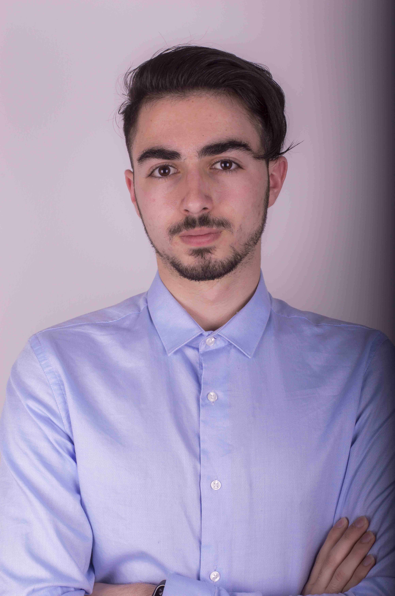

About me
 I am Giannis Kotsakiachidis and I am an Electrical & Computer Engineering student. From the very beginning of my college years I wanted to make good use of my free time in order to feel productive, so I joined EESTEC, a voluntary, non-profit organization, at Xanthi's Local Committee.
After my transfer from Democritus University of Thrace to the Aristotle University of Thessaloniki, I became the co-founder of EESTEC LC Thessaloniki. At the second year of my studies, I was a board member of the LC and held the position of Public Relations. Αt the same period I was the coordinator of five other people at the organization of our first international event about Android App Development.
By the end of the second year, I was selected to be a member of the Aristotle Space and Aeronautics Team (ASAT), in order to work on the CubeSAT project, a nano-satellite designed for research purposes. At the third year of my studies, I acquired the position of OBC coordinator, the sub-system that is basically the "brain" of the satellite and controls every order run by it.
In a parallel manner, I was working with web and mobile development and worked as a part-time photographer on holidays.
My Work

Web Development

Android App Development

Photography

Videography and Video Editing

CubeSAT
EESTEC
Contact Information
 johnkotsas97@gmail.com
johnkotsas97@gmail.com
 +30 6982289241
+30 6982289241